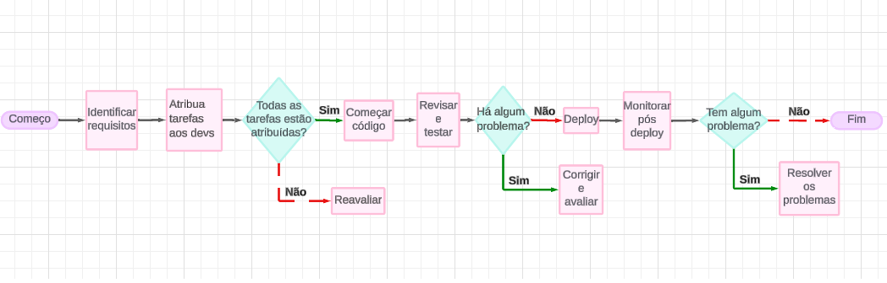
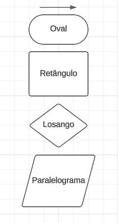
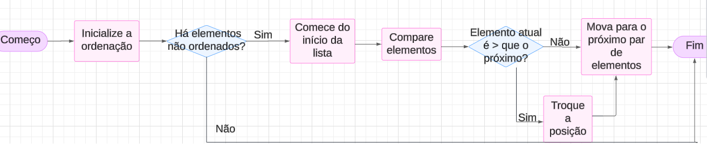

Fluxogramas
Fluxogramas são diagramas que representam visualmente a sequência de passos ou etapas de um processo, seja ele simples ou complexo. Eles utilizam símbolos e setas para ilustrar o fluxo de informações e decisões dentro de um sistema. São muito usados para áreas comerciais.
Exemplo abaixo implementado pela Progify:

Simbologia do Fluxograma
Seta: Direciona;
Oval: Retrata o ínicio e o fim;
Retângulo: Retrata ação ou processo;
Losango: Retrata uma decisão com caminhos;
Paralelograma: Retrata entrada ou saída de dados;

Fluxograma Bubble Sort

Fluxograma Insertion Sort